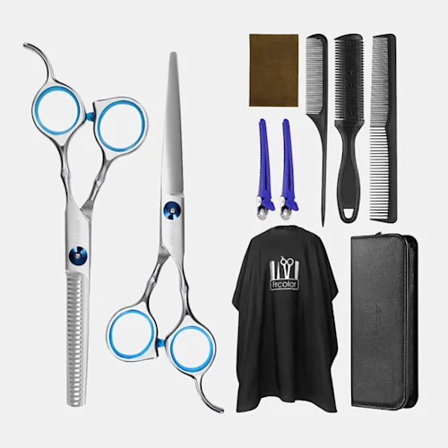

Nuestros Productos

maquina de cortar el pelo
este producto trae la maquina para cortar el pelo con sus diferentes peines para poder hacer cortes de mayor o menor cantidad de pelo ademas trae el cepillo para poder estar limpiando permanentemente la zona del corte.
Precio: $35.800

quit de tijeras-profesionales
este quit trae las diferentes tijeras para cortar el pelo o hacer texturizados ademas de un estuche para estas, diferentes peines, una navaja y una capa.
Precio: $23.500